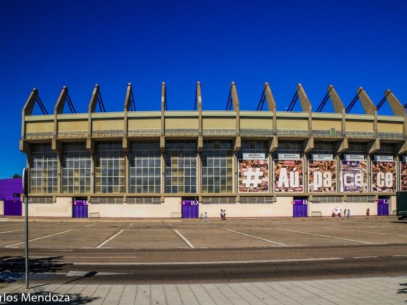
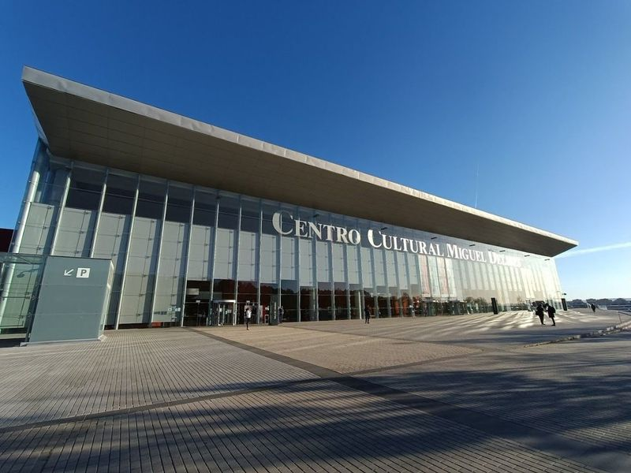
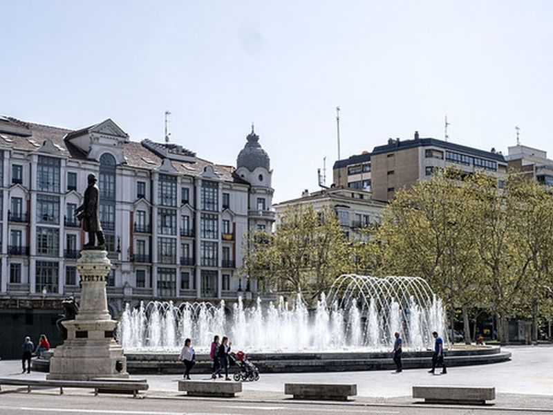
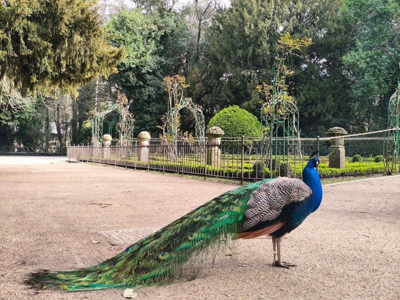
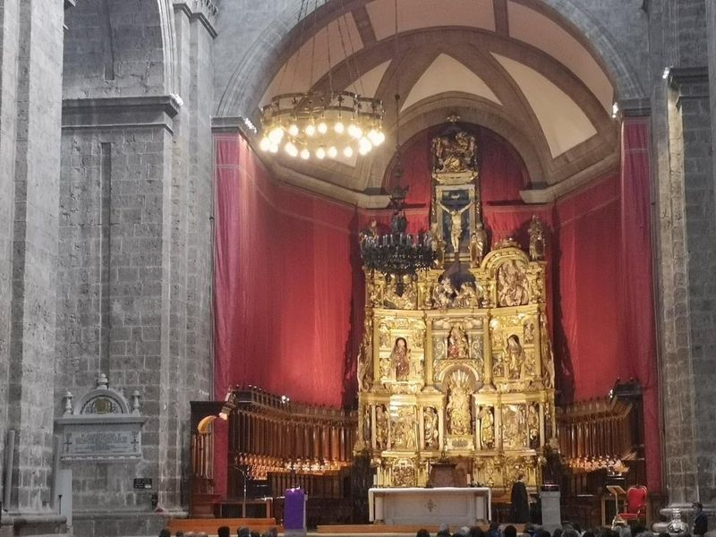
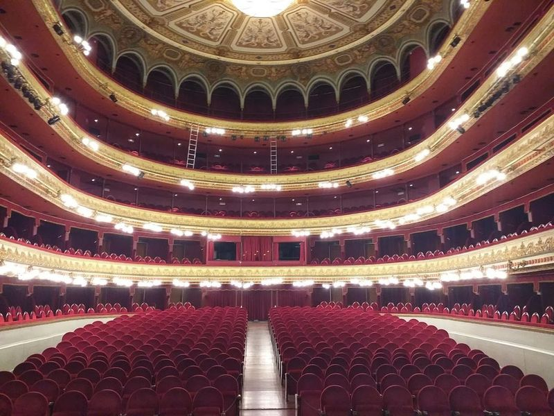
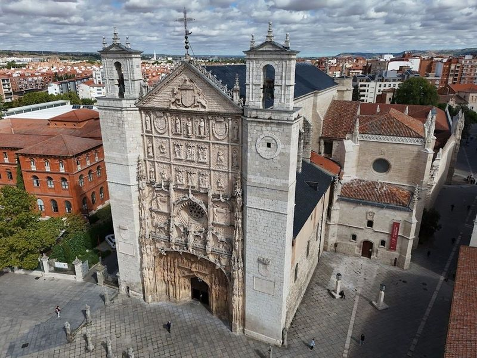
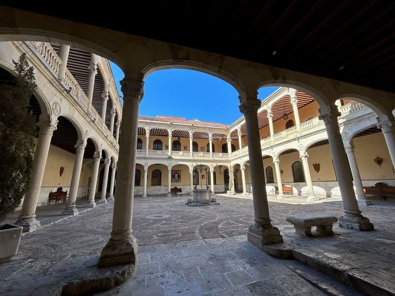
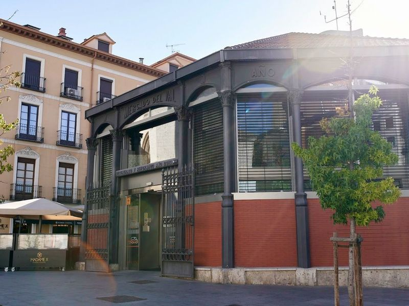
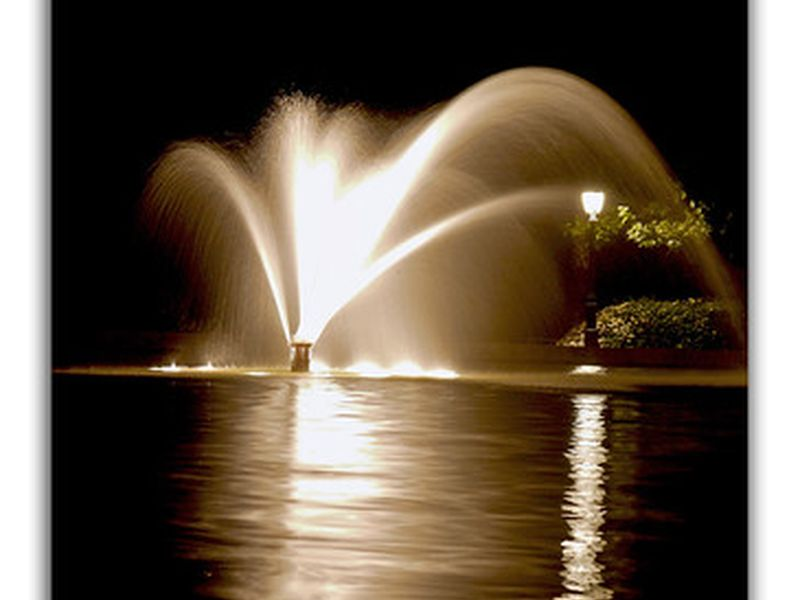

Explore Valladolid
A Brief History
Valladolid served intermittently as capital of Castile and of united Spain under Philip II and Philip III before Madrid assumed that role permanently in 1601. Its university, founded in the thirteenth century and re-established in the sixteenth, drew humanists linked to Columbus and to the Spanish court. Plaza Mayor, parish churches, and the houses of Cervantes and Columbus record how a Castilian administrative centre shaped law, printing, and royal ceremony on the northern meseta.
Attractions Map
Top Sights & Activities

José Zorrilla Stadium
José Zorrilla Stadium is a large football stadium known for hosting professional soccer matches, as well as occasional men's and women's international games. It first opened its doors in 1982 with a Spanish Liga match between Real Valladolid and Athletic Bilbao. The stadium has witnessed significant events such as the 1982 Copa del Rey Final. While some travellers find the exterior in need of improvement, many praise the interior and great parking facilities.

Centro Cultural Miguel Delibes
The Centro Cultural Miguel Delibes is a contemporary cultural building situated in Valladolid, Castilla y Leon, Spain. Designed by architect Ricardo Bofill Levi and opened in 2007, it hosts various events including concerts and performances. Located near the Jose Zorrilla stadium and the Cortes de Castilla y Leon, it serves as a hub for the community. The center features modern performance spaces and also houses several bars and cafes that are open regularly.

Plaza de Zorrilla
A prominent square featuring a statue of the poet José Zorrilla and surrounded by impressive architecture. The site is catalogued as a square. The site is catalogued as a square. The site is catalogued as a square. Plaza de Zorrilla is listed among principal sites for Valladolid within Spain.

Parque Campo Grande
Parque Campo Grande is the largest urban park in Valladolid, Spain, offering a retreat for both locals and travellers. The park features a variety of attractions including a small pond, playground, fountains, marble sculptures, and an ornamental lake with swans. Paseo Principe is a regal mall within the park adorned with iron gas lights and surrounded by lush foliage from over 60 different tree species.

Catedral de Nuestra Señora de la Asunción de Valladolid
The Cathedral of Valladolid is a example of Renaissance and Baroque architecture, dating back to the 16th century. It is In Valladolid, surrounded by other historical landmarks such as Plaza de San Pablo, Church of San Pablo, Pimentel Palace, Palace of Marques de Villena and the Royal Palace. travellers can also explore the National Sculpture Museum and Oriental Museum nearby.

Teatro Calderón
Teatro Calderón, a neoclassical theater in Valladolid, showcases the architectural currents of the 19th century. It is an symbol of the thriving bourgeoisie and stands out with its eclectic design. Named after Pedro Calderon de la Barca, it opened in 1864 and remains one of Spain's largest theaters. The interior, designed by Italian architect Augusto Ferri, exudes palatial grandeur.

Iglesia conventual de San Pablo (Padres Dominicos)
The Iglesia conventual de San Pablo (Padres Dominicos) is a 15th-century Isabelline-Gothic church and former convent located in Valladolid, northwest Spain. Commissioned by Cardinal Juan de Torquemada, this historical establishment boasts an ornate facade adorned with intricate carvings depicting the royal coat of arms, animals, and religious scenes.

Royal Palace
The Royal Palace in Valladolid served as the primary residence for Spanish monarchs during the 17th century and later became a temporary abode for several rulers, including Napoleon. Today, it houses the 4th General Sub-inspection of the Army. The palace is renowned for its gardens and is considered a divine and wonderful place to visit.

Mercado del Val
Mercado del Val, located in the old town of Valladolid, Spain, is a historic iron market dating back to 1882. After a full renovation in 2013, it now combines its late 19th-century architecture with modern facilities to meet the commercial needs of the 21st century. The market offers a variety of food stalls and bars where travellers can enjoy traditional cuisine.

Fuente Dorada
A historic square in Valladolid known for its fountain and proximity to many shops and cafes. The site is catalogued as a tourist attraction at Pl. Fuente Dorada, 3, 47002 Valladolid, Spain. The site is catalogued as a tourist attraction at Pl. Fuente Dorada, 3, 47002 Valladolid, Spain.